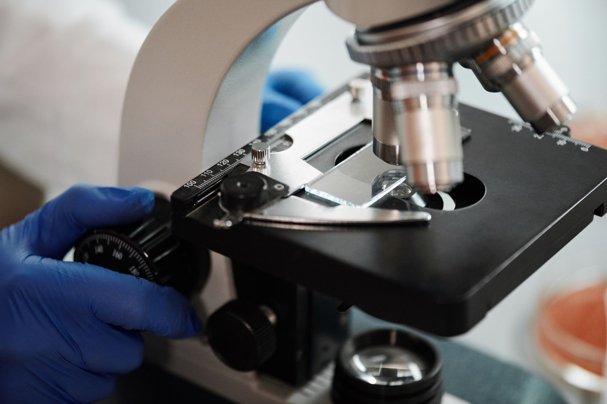

Growth-run log · Sheet 03 — method & terms
The grower, the method, and the small print.
The grower
Dr Marta Kowalczyk grew her first diamond films in a university microwave-plasma reactor in Warsaw, on a project measuring exactly the thing this practice now sells: how the thermal conductivity of a CVD film climbs as its grains grow. Twelve years followed across two industrial laboratories — production heat spreaders in one, single-crystal growth in the other — before she opened this practice in Eindhoven in 2019, within reach of the photonics and semiconductor corridor it mostly serves.
The practice is deliberately small: one reactor, one characterisation bench, one grower. That is a limitation and it is also the product. Every run in the log was set up, watched and measured by the person whose name is on the report.
Her standing opinion, printed here because clients hear it in the first meeting anyway: “A datasheet that quotes diamond at 2,200 without a thickness and a method is not a specification. It is a horoscope.”
Credentials, plainly: doctorate in materials physics (CVD growth and thermal transport); fourteen years of MPCVD growth across polycrystalline and homoepitaxial single-crystal work; characterisation by Raman spectroscopy, laser-flash diffusivity and X-ray diffraction — the three instruments on the bench here, and the three signatures on every report.

The method · Four stages, none skippable
How a growth engagement runs
Specify
The drawing, the thermal or optical budget and the number the part must hit — agreed in writing before the reactor is booked. If the budget can be met by a cheaper grade or a different material entirely, that is said now, when it costs nothing. See Run 187.
Grow
Microwave plasma CVD at 2.45 GHz, substrate temperatures around 800–900 °C, methane in hydrogen at a few percent — the recipe tuned to the grade, logged parameter by parameter, and filed with the run. Growth is slow: fractions of a millimetre are days, not hours.
Characterise
Raman for phase purity and stress, laser-flash for the through-plane conductivity of the delivered thickness, X-ray rocking curve for crystal quality where the grade calls for it. Measured on the part that ships — never on a witness piece alone.
Report
Every part leaves with its data pack: the measured values, the methods, the thicknesses, the run parameters that matter. If a measurement missed the specification, the report says so and the regrow clause below applies. There is no version of the report without the bad number.
The honesty page
Why every number on this site carries its conditions
Conductivity is not a property of "diamond". It is a property of a specific film: its grain size, its thickness, its nitrogen content, the direction you measure it and the instrument you measure it with. Table T1 spans 700 to 2,100 W/m·K inside one material grown in one reactor. Anyone selling you the top of that range for a thin film is selling you a number their part does not have.
The plate is rarely the bottleneck. Thermal resistance stacks in series: die, attach, spreader, interface, sink. The calculator on Sheet 01 computes the spreader's slice honestly — and the slice is often the smallest one. Money spent raising k from 1,500 to 2,100 is wasted if 8 mK/W of joint sits underneath it. This practice will run that sum for your stack before it grows anything.
Single-crystal is not automatically the answer. It is the answer when the application reads the crystal — quantum defects, detectors, high-end optics. For moving heat in a package, polycrystalline film at the right thickness wins on cost per degree, most of the time. Run 187 is the standing example.
Failed runs are filed, not buried. Eleven runs in the log were regrown at the practice's cost. That count is on the front page, next to the flattering numbers, because a grower who has never regrown anything is a grower whose specifications are too easy — or whose files are incomplete.
Engagement terms — the short version, in the open
- Regrow clause
- If a part misses its written specification, one regrow is made at no run-day charge. The calendar cost is real and is stated before you accept — see Run 203.
- Deposit
- 40% on booking the reactor, balance on delivery of the data pack.
- Lead times
- Three to six weeks for standard grades; single-crystal plates are quoted individually. The reactor runs one job at a time and the log is honest about the queue.
- Characterisation-only
- Welcome, including competitors' material. Results are confidential to the client and are reported as measured, favourable or not.
- Data
- The report and raw characterisation data are yours. Run parameters that constitute the practice's recipes are summarised, not transferred.
- Shipping
- Plates travel in membrane boxes, insured, at cost. Breakage in transit is replaced from the same run where material remains.